Surgeons Prices For Facelift In Baltimore
The term “facelift and neck lift” is now more capacious than 10 or even 5 years ago. Without exaggeration, modern technologies of surgical facial rejuvenation have moved far ahead by making plastic operations gentle and safe that provide pronounced and long-term results.
Stages of development
Ten years ago, surgeons could offer the patient a facelift and a neck that actually affects soft tissues.
The result, of course, was and even pleased women and men, but it was not so long.
After all, aging takes place at all levels – skin and subcutaneous. As a result, this is a repeated facelift of the face or neck after 5 years.
The next stage in the development of facelift in Baltimore has been the widespread introduction of SMAS facelift, the meaning of which is the total facelift of the musculo-aponeurotic layer, including the skin and soft tissues.
Doctor Lawrence Rosenberg Plastic Face Surgery Recovery
The operation gives pronounced and stable results, as all facial structures are rejuvenated. In those or other modifications, SMAS facelift is performed by leading plastic surgeons around the world.
A further step of the development facelift was appearance deep endoscopic facelift, during which the surgeon, when using an endoscope can operate at the level of the periosteum.
The operation does not actually involve visible scars and incisions, since all interventions are performed through punctures.
Endoscopic facelift allows not only to rejuvenate, but also to model the appearance, making it more stylish and attractive – with high cheekbones, almond-shaped eyes, beautiful forehead and temporal area, a clear angle between the chin and neck.
If you need to rejuvenate the neck area, the surgeon performs platysmoplasty. During a rather complicated surgical procedure, the neck skin is tightened, and also suturing of saggy tissues takes place at certain indications.
Doctor Patrick J. Byrne Lower Plastic Surgery In Face
Often platysmoplasty is supplemented with liposuction in the chin area and / or by the installation of a special implant, which makes the chin more expressive, and at the same time supports the lower third of the face.
Implant placement on the perimeter of the lower jaw is possible to enhance the effect – they will become a kind of “skeleton” for the entire face.
On the site you can get acquainted with prices and reviews for facelift, as well as see the photo before and after facelift.
Indications for facelift
-
- Deep wrinkles;
- Pronounced skin folds;
- Vague of the facial contours;
- The appearance of depressions under the eye sockets;
- Double chin;
- Omitted the outer corners of the eyelids, mouth and eyes;
- Bony structures protruding above the surface of the face;
- soft tissue sagging;
- Deep vertical furrows on cheeks;
- Excess fat;
- Sharp chin.
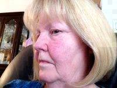Doctor Ravi Dahiya Facial Plastic Surgery Results
Specialists recommend perform facelift surgery for patients aged 35 to 55 years. It was in this period begin to appear noticeably age-related changes.
Despite the appearance of wrinkles, sagging, excess fat and other defects, the skin retains the ability to natural regeneration. For this reason, soft tissues are better suited for surgical correction.Facial implants
Speaking about the implants, it is worth mentioning that they are installed not only in the area of the chin and lower jaw. Silicone implants are widely used for raising cheekbones and to enhance or augment the physical structure of your face. Likewise, facial implants are used to fill the hollow eye socket and enlarge the lips. The obtained results are improved by contour aesthetic correction using lipofilling or fillers based on hyaluronic acid.
Aesthetic medicine is moving toward minimizing interference when achieving persistent and pronounced results. For this reason, clinics, where they provide facial plastic services, adopt the practice of using threads (Aptos, Silhouette Lift) or Endotine. These techniques effectively complement any anti-aging intervention and allow for a single incision to perform range of manipulations, which previously required multiple accesses.
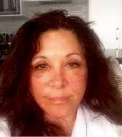Dr Jeffrey E. Schreiber Cosmetic Face Surgery Pic Results
Types of facial plastic surgery
- Blepharoplasty and correction of the shape of the upper and lower eyelids.
- Rhinoplasty is an operation aimed at correcting the size and shape of the nose.
- Otoplasty is an operation aimed at correction of the auricles.
- Full facelift in Baltimore is a correction of the anterior and lateral surfaces of the neck, the middle part of the face and the frontotemporal areas, the outer part of the eyebrows, the lifting of the drooping cheeks and areas around the corners of the mouth.
Advantages of facelift and Neck Lift
- Absence of pronounced traces – high professionalism allows doctors of our clinic to perform facelifting without appreciable scarring and scars;
- Little traumatic – microscopic incisions are made to perform a facelift, which quickly heal after the operation;
- Absolute safety – facelift and neck lift is carried out using the best equipment in a comfortable modern hospital environment;
- Skilled doctors – you trust health and youth to experienced surgeons, on account of which hundreds of successful operations; The complex effect provides stunning results up to 10-12 years.
Liquid Facelift Baltimore
If you want to do a facelift, doctors are ready to help you fulfill your dreams of returning youth to reality. After the surgery, there will be no trace of wrinkles, folds or sagging. The skin will again become smooth, tightened and elastic as in adolescence. You will not only look younger, but also keep an attractive look for many years!
The results of a facelift.
Positive changes are noticeable immediately after as little postoperative swelling subside. The primary effect occurs after about 1-2 months after the facelift. Finally, the results are fixed for 6-12 months. Approximately so much time is required for the body to fully complete the processes that activate the lifting of the facial muscles and skin.
Rhytidectomy Surgery With Dr Dean P. Kane
On average, the effect of a facelift and neck lift lasts up to 12 years. Duration depends on the age, lifestyle, individual characteristics of the patient’s body and other factors. Regular cosmetic procedures should be performed for the longest possible preservation of the results. The most effective method you will be advised by our doctor after the completion of the recovery period.
Preparing for surgery
It is necessary to observe basic rules of hygiene. For several weeks before a facelift, it is advisable to stop smoking and take medicines with salicylates. This applies equally to hormonal drugs and alcohol.
Recovery after surgery
You need rest during the first days after facelift: 2 days you can not wash your head so as not to hurt healing seams, your head can be washed in a hospital clinic. Do not eat heavy foods and overload the stomach.
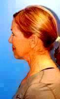Sagging In The Mid-face Can Be Fixed With A Facelift
For 1-2 months it is necessary to reduce physical activity, to expose the body to heavy loads is prohibited, just like going to saunas, swimming pools, baths or similar resting places.
Attention! More detailed information on the preparation for surgery and recovery after surgery you will receive during consultations with doctors.
Contraindications to facelift and neck lift
- Diabetes;
- Pregnancy period;
- Mental disorders;
- Cardiac, hepatic, renal and pulmonary insufficiency;
- Infectious diseases;
- Reduced blood coagulability;
- Purulent diseases on the face;
- The presence of malignant tumors;
- Pathology of connective tissue;
- There may be other contraindications.
In general, Baltimore doctors prescribe a facelift surgery or other type of aesthetic correction only after a detailed study of the patient’s condition. This ensures the safety of the intervention and prevents the occurrence of serious complications.
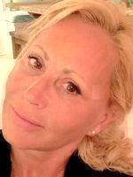Mini Facelift Baltimore Removes Sagging Skin And Tightens The Lax Muscles
Baltimore, MD ZIP Codes: 21201, 21202, 21203, 21205, 21206, 21209, 21210, 21211, 21212, 21213, 21214, 21215, 21216, 21217, 21218, 21223, 21224, 21229, 21230, 21231, 21233, 21235, 21239, 21240, 21241, 21250, 21251, 21263, 21264, 21270, 21273, 21275, 21278, 21279, 21280, 21281, 21287, 21288, 21289, 21290, 21297, 21298.
Cost of surgery in 2009:
- $2,500 – Baltimore MD – 2009;
- $4,025 – Baltimore, Maryland – 2009;
Pricing for operation in 2011:
- $11,000 – Ariel N. Rad, MD, PhD – Baltimore, MD (Washington DC, DC) – 2011;
- $18,500 – Ariel N. Rad, MD, PhD – Baltimore, MD (Washington DC, DC) – 2011;
- $5,000 – Ariel N. Rad, MD, PhD – Baltimore, MD (Washington DC, DC) – 2011;
- $7,000 – Theda C. Kontis, MD – Baltimore, MD – 2011;
- $9,800 – Fady A. Sinno, MD – Ellicott City, MD (Baltimore, MD) – 2011;
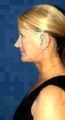What To Expect From Facelift Surgery In Baltimore
Average cost for facial cosmetic surgery is $10260 dollars in 2011 in Baltimore
Pricing for operation in 2012:
- $12,000 – Larry H. Lickstein, MD – Baltimore, MD (Fairfax, VA) – 2012;
- $14,000 – Thomas T. Le, MD – Baltimore, MD – 2012;
- $17,000 – Jeffrey E. Schreiber, MD, FACS – Baltimore, MD – 2012;
- $30,000 – Michele A. Shermak, MD – Lutherville, MD (Baltimore, MD) – 2012;
The average price of plastic surgery face change is $18250 in 2012 in Baltimore
Pricing for procedure in 2013:- $12,000 – Ira D. Papel, MD – Pikesville, MD (Baltimore, MD) – 2013;
- $20,000 – Adam L. Basner, MD – Lutherville Timonium, MD (Baltimore, MD) – 2013;
- $20,000 – George W. Weston, MD – Baltimore, MD (Reston, VA) – 2013;
- $5,000 – Theda C. Kontis, MD – Baltimore, MD – 2013;
- $8,000 – Ira D. Papel, MD – Baltimore, MD – 2013;
- $9,000 – Jeffrey E. Schreiber, MD, FACS – Lutherville Timonium, MD (Baltimore, MD) – 2013;
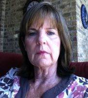Doctor Ariel N. Rad Plastic Surgery Of Face
Price of facelift procedure on average is $12330 in 2013 in Baltimore
The realself prices for surgery in 2014:
- $10,000 – Jeffrey E. Schreiber, MD, FACS – Northwest Hospital (Baltimore, MD) – 2014;
- $10,000 – Jeffrey E. Schreiber, MD, FACS – Randallstown, MD (Baltimore, MD) – 2014;
- $10,800 – Ira D. Papel, MD – Baltimore, MD – 2014;
- $10,800 – Jeffrey E. Schreiber, MD, FACS – Baltimore, MD – 2014;
- $12,000 – James Vogel, MD – Baltimore, MD – 2014;
- $12,745 – Dr. Lickstein – Baltimore, MD (Fairfax, VA) – 2014;
- $14,000 – Ronald Schuster, MD – Baltimore, MD – 2014;
- $16,000 – Adam L. Basner, MD – Lutherville Timonium, MD (Baltimore, MD) – 2014;
- $2,250 – Randolph Capone, MD, FACS – Baltimore, MD – 2014;
- $20,000 – Ronald Schuster, MD – Lutherville, MD (Baltimore, MD) – 2014;
- $5,000 – Ira D. Papel, MD – Baltimore, MD – 2014;
- $8,240 – Dean P. Kane, MD, FACS – Pikesville, MD (Baltimore, MD) – 2014;
- $9,500 – Jeffrey E. Schreiber, MD, FACS – Baltimore, MD – 2014;
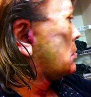Doctor Steven Hopping Neck And Lower Face Lift
The average laser face lift price is $10870 in 2014 in Baltimore
Procedure cost in 2015:
- $10,000 – Dean P. Kane, MD, FACS – Baltimore, MD – 2015;
- $10,000 – Ira D. Papel, MD – Pikesville, MD (Baltimore, MD) – 2015;
- $10,864 – Jeffrey E. Schreiber, MD, FACS – Lutherville, MD (Baltimore, MD) – 2015;
- $12,000 – Jeffrey E. Schreiber, MD, FACS – Baltimore, MD – 2015;
- $12,000 – Ronald Schuster, MD – Baltimore, MD – 2015;
- $16,000 – Dean P. Kane, MD, FACS – Baltimore, MD – 2015;
- $4,936 – Baltimore – 2015;
- $5,000 – Ronald Schuster, MD – Baltimore, MD – 2015;
- $8,500 – Jeffrey E. Schreiber, MD, FACS – Baltimore, MD – 2015;
- $9,000 – Jeffrey E. Schreiber, MD, FACS – Baltimore, MD – 2015;
- $9,300 – Dr. Chad Gordon – Baltimore, MD – 2015;
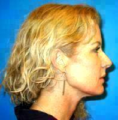If You Are Unhappy With The Way Your Face
The average price of plastic surgery face change is $9780 US dollars in 2015 in Baltimore
The realself cost of cosmetic surgery face in 2016:- $1,400 – Ronald Schuster, MD – Baltimore, MD – 2016;
- $1,500 – Theda C. Kontis, MD – Pikesville, MD (Baltimore, MD) – 2016;
- $11,000 – Jeffrey E. Schreiber, MD, FACS – Baltimore, MD – 2016;
- $12,000 – Jeffrey E. Schreiber, MD, FACS – Baltimore, MD – 2016;
- $13,000 – Dean P. Kane, MD, FACS – Pikesville, MD (Baltimore, MD) – 2016;
- $2,450 – Dean P. Kane, MD, FACS – Pikesville, MD (Baltimore, MD) – 2016;
The average price of plastic surgery face change is $6890 dollars in 2016 in Baltimore
Realself pricing for procedure in 2017:
- $8,700 – Ronald Luethke, MD – Baltimore, MD – 2017;
- $8,700 – Ronald Luethke, MD – Baltimore, MD – 2017;
- $8,700 – Ronald Luethke, MD – Baltimore, MD – 2017;
Cost for cosmetic face surgery on average is $8700 US dollars in 2017 in Baltimore
Prices for lift face skin in 2018:
- $10,100 – Salman Ashruf, MD, Hanover Board Certified Plastic Surgeon – 7550 Teague Rd., Ste. 105, Hanover, Maryland – 2018;
- $10,200 – Adam L. Basner, MD, Lutherville Timonium Board Certified Plastic Surgeon – The Plastic Surg. Ctr. for MD, 1304 Bellona Avenue, Lutherville Timonium, Maryland – 2018;
- $10,500 – Sarah Mess, Columbia Board Certified Plastic Surgeon – 9821 Broken Land Pkwy., Ste. 102, Columbia, Maryland – 2018;
- $10,600 – Eric Chang, MD, Columbia Board Certified Plastic Surgeon – 8860 Columbia 100 Parkway, #206, Columbia, Maryland – 2018;
- $10,800 – Claire S. Duggal, MD, Annapolis Board Certified Plastic Surgeon – 104 Ridgely Ave., Annapolis, Maryland – 2018;
- $10,800 – James E. Chappell, MD, Annapolis Board Certified Plastic Surgeon – 2002 Medical Pkwy., Ste. 215, Annapolis, Maryland – 2018;
- $11,000 – Eric Chang, MD, Columbia Board Certified Plastic Surgeon – 8860 Columbia 100 Parkway, #206, Columbia, Maryland – 2018;
- $11,200 – Ira D. Papel, MD, Baltimore Board Certified Facial Plastic Surgeon – 1838 Greene Tree Rd., Ste. 370, Baltimore, Maryland – 2018;
- $11,200 – Metamorphosis Plastic Surgery – 2018;
- $12,400 – William Kanter, MD, Ellicott City Board Certified Plastic Surgeon – 5092 Dorsey Hall Dr, Suite 102, Ellicott City, Maryland – 2018;
- $12,600 – Frederick Watkins, MD, Rockville Board Certified Plastic Surgeon – 3203 Tower Oaks Blvd, Suite 200, Rockville, Maryland – 2018;
- $12,700 – Gabriel Del Corral, MD, FACS, Westminster Board Certified Plastic Surgeon – 193 Stoner Ave., Ste. 220, Westminster, Maryland – 2018;
- $3,200 – Babar Sultan, MD, Towson Board Certified Facial Plastic Surgeon – 100 West Rd., Ste. 111, Towson, Maryland – 2018;
- $3,300 – Columbia Aesthetic Plastic Surgery – 2018;
- $3,500 – Jeffrey Horowitz, MD, Bel Air Board Certified Plastic Surgeon – 12 MedStar Blvd., Ste. 285, Bel Air, Maryland – 2018;
- $3,600 – C. William Strawberry, MD (retired), Annapolis Board Certified Plastic Surgeon – 2448 Holly Ave, Ste 400, Annapolis, Maryland – 2018;
- $4,300 – Ronald Luethke, MD, Columbia Board Certified Plastic Surgeon – 10710 Charter Drive, Suite 240, Columbia, Maryland – 2018;
- $4,400 – Bruno | Brown Plastic Surgery – Glen Burnie – 2018;
- $4,600 – James E Vogel Plastic Surgery – Owings Mills – 2018;
- $5,500 – Eric Chang, MD, Columbia Board Certified Plastic Surgeon – 8860 Columbia 100 Parkway, #206, Columbia, Maryland – 2018;
- $5,600 – Bryan Ambro, MD, Annapolis Board Certified Facial Plastic Surgeon – 2002 Medical Pkwy., Ste. 215, Annapolis, Maryland – 2018;
- $5,600 – Center for Cosmetic Surgery & Medi-Spa – 2018;
- $5,700 – Michael D. Cohen, MD, Baltimore Board Certified Plastic Surgeon – 1427 Clarkview Rd., Ste. 300, Baltimore, Maryland – 2018;
- $5,900 – Eric Chang, MD, Columbia Board Certified Plastic Surgeon – 8860 Columbia 100 Parkway, #206, Columbia, Maryland – 2018;
- $6,200 – Paul R. Ringelman, MD, FACS, Baltimore Board Certified Plastic Surgeon – 7505 Osler Dr., Ste. 403, Baltimore, Maryland – 2018;
- $6,300 – Eric Chang, MD, Columbia Board Certified Plastic Surgeon – 8860 Columbia 100 Parkway, #206, Columbia, Maryland – 2018;
- $6,700 – Nia Banks, MD, PhD, Lanham Board Certified Plastic Surgeon – 8116 Good Luck Road, Suite 215, Lanham, Maryland – 2018;
- $6,700 – Randolph Capone, MD, FACS (in memoriam), Towson Board Certified Facial Plastic Surgeon – 6535 N. Charles St., Ste. 220, Towson, Maryland – 2018;
- $7,000 – Ravi K. Aloor, MD, Towson Board Certified Plastic Surgeon – 530 E Joppa Road, Suite 100, Towson, Maryland – 2018;
- $7,200 – Barry J. Cohen, MD, Rockville Board Certified Plastic Surgeon – 3203 Tower Oaks Blvd., Rockville, Maryland – 2018;
- $7,800 – Kerry Owens, MD, Baltimore Board Certified Plastic Surgeon – 516 N Rolling Rd., Ste. 107, Baltimore, Maryland – 2018;
- $8,000 – Gary Vela, MD, FACS, Baltimore Board Certified Plastic Surgeon – 1427 Clarkview Rd., Ste. 300, Baltimore, Maryland – 2018;
- $8,800 – Bryan Ambro, MD, Annapolis Board Certified Facial Plastic Surgeon – 2002 Medical Pkwy., Ste. 215, Annapolis, Maryland – 2018;
- $9,000 – Cosmetic Plastic Surgery Center of Maryland, Allure Medspa – Hanover – 2018;
- $9,600 – Paul Buhrer, MD, Annapolis Board Certified Plastic Surgeon – 2448 Holly Ave., Ste. 400, Annapolis, Maryland – 2018;
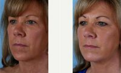Doctor Theda C. Kontis, MD, Baltimore Facial Plastic Surgeon – 63 Year Old Woman Treated With Facelift
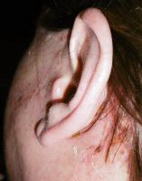Dr Theda C. Kontis, MD, Baltimore Board Certified Facial Plastic Surgeon Best Face Lift
Price list for best face lift procedure in 2019:
- $10,100 – Cosmetic Plastic Surgery Center of Maryland, Allure Medspa – Hanover – 2019;
- $10,500 – Babar Sultan, MD, Towson Board Certified Facial Plastic Surgeon – 100 West Rd., Ste. 111, Towson, Maryland – 2019;
- $10,900 – Beverly A. Fischer, MD, Timonium Board Certified Plastic Surgeon – 12205 -12207 Tullamore Rd. , Timonium, Maryland – 2019;
- $11,300 – Samir Shureih, MD, Baltimore Board Certified Plastic Surgeon – 10 East 31 Street, Baltimore, Maryland – 2019;
- $12,300 – Belcara Health – 2019;
- $3,300 – Plastic Surgery Specialists – Annapolis – 2019;
- $4,200 – James E. Chappell, MD, Annapolis Board Certified Plastic Surgeon – 2002 Medical Pkwy., Ste. 215, Annapolis, Maryland – 2019;
- $4,300 – Ira D. Papel, MD, Baltimore Board Certified Facial Plastic Surgeon – 1838 Greene Tree Rd., Ste. 370, Baltimore, Maryland – 2019;
- $4,700 – Center for Cosmetic Surgery & Medi-Spa – 2019;
- $5,000 – Claire S. Duggal, MD, Annapolis Board Certified Plastic Surgeon – 104 Ridgely Ave., Annapolis, Maryland – 2019;
- $6,400 – Carrie Houssock, MD, Owings Mills Board Eligible Plastic Surgeon – 4 Park Center Ct., Ste. 100 , Owings Mills, Maryland – 2019;
- $6,400 – Lawrence Rosenberg, MD – Account Suspended, Lutherville Timonium Board Certified Plastic Surgeon – 1304 Bellona Avenue, Lutherville Timonium, Maryland – 2019;
- $6,900 – Gary Burton, MD, Bowie Board Certified Plastic Surgeon – 4000 Mitchellville Rd., Ste. A306, Bowie, Maryland – 2019;
- $7,200 – Nia Banks, MD, PhD, Lanham Board Certified Plastic Surgeon – 8116 Good Luck Road, Suite 215, Lanham, Maryland – 2019;
- $7,300 – Brent Birely, MD, Lutherville Board Certified Plastic Surgeon – 1300 York Rd., Bldg. A, Ste. 100, Lutherville, Maryland – 2019;
- $7,600 – Claire S. Duggal, MD, Annapolis Board Certified Plastic Surgeon – 104 Ridgely Ave., Annapolis, Maryland – 2019;
- $8,400 – William Kanter, MD, Ellicott City Board Certified Plastic Surgeon – 5092 Dorsey Hall Dr, Suite 102, Ellicott City, Maryland – 2019;
- $8,500 – Theda C. Kontis, MD, Baltimore Board Certified Facial Plastic Surgeon – 1838 Greene Tree Rd., Ste. 370, Baltimore, Maryland – 2019;
- $8,600 – Alan Weiss, MD, Glen Burnie Board Certified Plastic Surgeon – 216 Crain Hwy , Suite 101, Glen Burnie, Maryland – 2019;
- $8,600 – Eve Bruce, M.D. (retired), Lutherville Board Certified Plastic Surgeon – 1304 Bellona Ave, Lutherville, Maryland – 2019;
- $8,700 – Ira D. Papel, MD, Baltimore Board Certified Facial Plastic Surgeon – 1838 Greene Tree Rd., Ste. 370, Baltimore, Maryland – 2019;
- $8,800 – James R. Bruno, MD, FACS, Chevy Chase Board Certified Plastic Surgeon – 5454 Wisconsin Avenue, Suite 1210, Chevy Chase, Maryland – 2019;
- $8,900 – Emily Clarke-Pearson, MD, Baltimore Board Certified Plastic Surgeon – 949 Fell S, Suite B, Baltimore, Maryland – 2019;
- $9,100 – Adam Summers, MD, Glen Burnie Board Certified Plastic Surgeon – 7704 Quarterfield Rd., Ste. E, Glen Burnie, Maryland – 2019;
- $9,400 – Alyson Wells, MD, FACS, Hunt Valley Board Certified Plastic Surgeon – 10151 York Rd., Suites 112-114, Hunt Valley, Maryland – 2019;
- $9,500 – James Vogel, MD, Owings Mills Board Certified Plastic Surgeon – 4 Park Center Court, Suite 100, Owings Mills, Maryland – 2019;
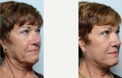72 Year Old Woman Treated With Facelift Before With Dr. Babar Sultan, MD, Baltimore Facial Plastic Surgeon
Face surgery clinic price list in 2020:
- $10,600 – Stanley Klatsky, MD (retired), Lutherville Board Certified Plastic Surgeon – 1304 Bellona Avenue, Lutherville, Maryland – 2020;
- $10,700 – Ramon DeJesus, MD, Bel Air Board Certified Plastic Surgeon – 2012 South Tollgate Rd., Ste. 100, Bel Air, Maryland – 2020;
- $10,800 – Michael D. Cohen, MD, Baltimore Board Certified Plastic Surgeon – 1427 Clarkview Rd., Ste. 300, Baltimore, Maryland – 2020;
- $11,700 – Kofi Boahene, MD, Baltimore Board Certified Facial Plastic Surgeon – 601 N. Caroline, 6th Floor, Baltimore, Maryland – 2020;
- $11,800 – Plastic Surgery Specialists – Annapolis – 2020;
- $11,900 – Emile Brown, MD, Baltimore Board Certified Plastic Surgeon – 1838 Greene Tree Rd., Ste. 370, Baltimore, Maryland – 2020;
- $12,000 – Barry J. Cohen, MD, Rockville Board Certified Plastic Surgeon – 3203 Tower Oaks Blvd., Rockville, Maryland – 2020;
- $12,000 – Ravi K. Aloor, MD, Towson Board Certified Plastic Surgeon – 530 E Joppa Road, Suite 100, Towson, Maryland – 2020;
- $12,800 – James E. Chappell, MD, Annapolis Board Certified Plastic Surgeon – 2002 Medical Pkwy., Ste. 215, Annapolis, Maryland – 2020;
- $3,600 – Emile Brown, MD, Baltimore Board Certified Plastic Surgeon – 1838 Greene Tree Rd., Ste. 370, Baltimore, Maryland – 2020;
- $4,600 – Craig Person, MD, Greenbelt Board Certified Plastic Surgeon – 7501 Greenway Center Drive, Suite 220, Greenbelt, Maryland – 2020;
- $4,800 – Paul Buhrer, MD, Annapolis Board Certified Plastic Surgeon – 2448 Holly Ave., Ste. 400, Annapolis, Maryland – 2020;
- $4,900 – Barry J. Cohen, MD, Rockville Board Certified Plastic Surgeon – 3203 Tower Oaks Blvd., Rockville, Maryland – 2020;
- $4,900 – Randolph Capone, MD, FACS (in memoriam), Towson Board Certified Facial Plastic Surgeon – 6535 N. Charles St., Ste. 220, Towson, Maryland – 2020;
- $5,100 – Alyson Wells, MD, FACS, Hunt Valley Board Certified Plastic Surgeon – 10151 York Rd., Suites 112-114, Hunt Valley, Maryland – 2020;
- $5,200 – Bryan Ambro, MD, Annapolis Board Certified Facial Plastic Surgeon – 2002 Medical Pkwy., Ste. 215, Annapolis, Maryland – 2020;
- $5,200 – Michele A. Shermak, MD, Lutherville Board Certified Plastic Surgeon – 1304 Bellona Ave., Lutherville, Maryland – 2020;
- $6,200 – Gary Vela, MD, FACS, Baltimore Board Certified Plastic Surgeon – 1427 Clarkview Rd., Ste. 300, Baltimore, Maryland – 2020;
- $6,400 – Maakan Taghizadeh, MD, Catonsville Board Certified Plastic Surgeon – 300 Frederick Road, Suite 200, Catonsville, Maryland – 2020;
- $6,600 – Sullivan Surgery and Spa – Annapolis – 2020;
- $6,700 – Adam Summers, MD, Glen Burnie Board Certified Plastic Surgeon – 7704 Quarterfield Rd., Ste. E, Glen Burnie, Maryland – 2020;
- $7,500 – Terri L. Hill, MD, Ellicott City Board Certified Plastic Surgeon – 4785 Dorsey Hall Drive, Suite 111, Ellicott City, Maryland – 2020;
- $7,900 – Cosmetic Plastic Surgery Center of Maryland, Allure Medspa – Hanover – 2020;
- $8,100 – Babar Sultan, MD, Towson Board Certified Facial Plastic Surgeon – 100 West Rd., Ste. 111, Towson, Maryland – 2020;
- $8,100 – Terri L. Hill, MD, Ellicott City Board Certified Plastic Surgeon – 4785 Dorsey Hall Drive, Suite 111, Ellicott City, Maryland – 2020;
- $8,400 – James E Vogel Plastic Surgery – Owings Mills – 2020;
- $8,400 – Lisa Ishii, MD, Lutherville Board Certified Facial Plastic Surgeon – 10751 Falls Road, Suite 406, Falls Concourse, Lutherville, Maryland – 2020;
- $9,100 – Paul Buhrer, MD, Annapolis Board Certified Plastic Surgeon – 2448 Holly Ave., Ste. 400, Annapolis, Maryland – 2020;
Realself prices for procedure in 2021:
- $10,400 – Eve Bruce, M.D. (retired), Lutherville Board Certified Plastic Surgeon – 1304 Bellona Ave, Lutherville, Maryland – 2021;
- $10,500 – Ricardo L. Rodriguez, MD, Lutherville Board Certified Plastic Surgeon – 1300 Bellona Ave., Ste. C, Lutherville, Maryland – 2021;
- $11,600 – Nia Banks, MD, PhD, Lanham Board Certified Plastic Surgeon – 8116 Good Luck Road, Suite 215, Lanham, Maryland – 2021;
- $12,100 – Ravi K. Aloor, MD, Towson Board Certified Plastic Surgeon – 530 E Joppa Road, Suite 100, Towson, Maryland – 2021;
- $12,800 – Craig Person, MD, Greenbelt Board Certified Plastic Surgeon – 7501 Greenway Center Drive, Suite 220, Greenbelt, Maryland – 2021;
- $12,900 – Gary Burton, MD, Bowie Board Certified Plastic Surgeon – 4000 Mitchellville Rd., Ste. A306, Bowie, Maryland – 2021;
- $12,900 – Jeffrey Horowitz, MD, Bel Air Board Certified Plastic Surgeon – 12 MedStar Blvd., Ste. 285, Bel Air, Maryland – 2021;
- $12,900 – Nadia K. Mostovych, MD, Baltimore Facial Plastic Surgeon, Board Certified in Otolaryngology – Head and Neck Surgery – 1427 Clarkview Rd., Ste. 300, Baltimore, Maryland – 2021;
- $3,200 – Nassif E. Soueid, MD, Lutherville Board Certified Plastic Surgeon – 1927 York Road, Lutherville, Maryland – 2021;
- $3,500 – Gary Burton, MD, Bowie Board Certified Plastic Surgeon – 4000 Mitchellville Rd., Ste. A306, Bowie, Maryland – 2021;
- $3,600 – Bryan Ambro, MD, Annapolis Board Certified Facial Plastic Surgeon – 2002 Medical Pkwy., Ste. 215, Annapolis, Maryland – 2021;
- $3,800 – Christopher Spittler, MD, Annapolis Board Certified Plastic Surgeon – 2448 Holly Ave., Ste. 400, Annapolis, Maryland – 2021;
- $3,900 – Bruno | Brown Plastic Surgery – Glen Burnie – 2021;
- $3,900 – Jeffrey Horowitz, MD, Bel Air Board Certified Plastic Surgeon – 12 MedStar Blvd., Ste. 285, Bel Air, Maryland – 2021;
- $4,000 – Plastic Surgery Specialists – Annapolis – 2021;
- $4,200 – Frederick Watkins, MD, Rockville Board Certified Plastic Surgeon – 3203 Tower Oaks Blvd, Suite 200, Rockville, Maryland – 2021;
- $5,000 – Ronald Schuster Plastic Surgery – 2021;
- $5,400 – Alexander M. Guba, MD, Towson Board Certified Plastic Surgeon – 6569 N Charles Towson, MD 21204, St # 707, Towson, Maryland – 2021;
- $5,600 – Kelly Marie Sullivan, MD, FACS, Annapolis Board Certified Plastic Surgeon – 130 Admiral Cochrane Drive , Suite 300, Annapolis, Maryland – 2021;
- $5,700 – James Vogel, MD, Owings Mills Board Certified Plastic Surgeon – 4 Park Center Court, Suite 100, Owings Mills, Maryland – 2021;
- $6,200 – Ravi K. Aloor, MD, Towson Board Certified Plastic Surgeon – 530 E Joppa Road, Suite 100, Towson, Maryland – 2021;
- $6,900 – Christopher Spittler, MD, Annapolis Board Certified Plastic Surgeon – 2448 Holly Ave., Ste. 400, Annapolis, Maryland – 2021;
- $7,900 – Babar Sultan, MD, Towson Board Certified Facial Plastic Surgeon – 100 West Rd., Ste. 111, Towson, Maryland – 2021;
- $7,900 – Ronald Schuster Plastic Surgery – 2021;
- $8,700 – Nadia K. Mostovych, MD, Baltimore Facial Plastic Surgeon, Board Certified in Otolaryngology – Head and Neck Surgery – 1427 Clarkview Rd., Ste. 300, Baltimore, Maryland – 2021;
- $8,800 – James R. Bruno, MD, FACS, Chevy Chase Board Certified Plastic Surgeon – 5454 Wisconsin Avenue, Suite 1210, Chevy Chase, Maryland – 2021;
- $9,000 – Emily Clarke-Pearson, MD, Baltimore Board Certified Plastic Surgeon – 949 Fell S, Suite B, Baltimore, Maryland – 2021;
- $9,700 – Ravi K. Aloor, MD, Towson Board Certified Plastic Surgeon – 530 E Joppa Road, Suite 100, Towson, Maryland – 2021;
Realself pricing for treatment in 2022:
- $10,800 – Plastic Surgery Specialists – Annapolis – 2022;
- $10,900 – Gary Vela, MD, FACS, Baltimore Board Certified Plastic Surgeon – 1427 Clarkview Rd., Ste. 300, Baltimore, Maryland – 2022;
- $11,100 – Barry J. Cohen, MD, Rockville Board Certified Plastic Surgeon – 3203 Tower Oaks Blvd., Rockville, Maryland – 2022;
- $11,300 – Theda C. Kontis, MD, Baltimore Board Certified Facial Plastic Surgeon – 1838 Greene Tree Rd., Ste. 370, Baltimore, Maryland – 2022;
- $11,700 – David Lowe, MD, Annapolis Board Certified Plastic Surgeon – 2448 Holly Ave, Suite 400, Annapolis, Maryland – 2022;
- $11,800 – Vikisha Fripp, MD, Washington Board Certified Plastic Surgeon – 1150 Varnum Street, N.E., Ste 300, Washington, District of Columbia – 2022;
- $11,900 – Daniel P. Markmann, MD, Ellicott City Board Certified Plastic Surgeon – 9171 Baltimore National Pike, Ste. 205, Ellicott City, Maryland – 2022;
- $12,500 – Fady A. Sinno, MD, Ellicott City Board Certified Plastic Surgeon – 5300 Dorsey Hall Dr., Ste. 102, Ellicott City, Maryland – 2022;
- $12,700 – Bryan Ambro, MD, Annapolis Board Certified Facial Plastic Surgeon – 2002 Medical Pkwy., Ste. 215, Annapolis, Maryland – 2022;
- $12,900 – Darab Hormozi, MD, Towson Oculoplastic Surgeon, Board Certified in Ophthalmology – 8415 Bellona Ln. , Ste. 212, Towson, Maryland – 2022;
- $13,000 – Paul R. Ringelman, MD, FACS, Baltimore Board Certified Plastic Surgeon – 7505 Osler Dr., Ste. 403, Baltimore, Maryland – 2022;
- $3,200 – Alyson Wells, MD, FACS, Hunt Valley Board Certified Plastic Surgeon – 10151 York Rd., Suites 112-114, Hunt Valley, Maryland – 2022;
- $3,400 – Beverly A. Fischer, MD, Timonium Board Certified Plastic Surgeon – 12205 -12207 Tullamore Rd. , Timonium, Maryland – 2022;
- $3,800 – Ajay V. Kumar, MD, Baltimore Board Certified Plastic Surgeon – 300 Fredrick Rd., Ste. 200, Baltimore, Maryland – 2022;
- $5,000 – Ravi Dahiya, MD, Rockville Board Certified Facial Plastic Surgeon – 110 S. Washington St., Rockville, Maryland – 2022;
- $5,100 – Maakan Taghizadeh, MD, Owings Mills Board Certified Plastic Surgeon – 25 Crossroads Dr., Ste. 420, Owings Mills, Maryland – 2022;
- $5,100 – Sarah Mess, MD, Columbia Board Certified Plastic Surgeon – 9821 Broken Land Pkwy., Ste. 102, Columbia, Maryland – 2022;
- $5,400 – Craig Vander Kolk, MD, Baltimore Board Certified Plastic Surgeon – 227 St. Paul Pl., 6th Floor, Baltimore, Maryland – 2022;
- $5,600 – Samir Shureih, MD, Baltimore Board Certified Plastic Surgeon – 10 East 31 Street, Baltimore, Maryland – 2022;
- $5,800 – Darab Hormozi, MD, Towson Oculoplastic Surgeon, Board Certified in Ophthalmology – 8415 Bellona Ln. , Ste. 212, Towson, Maryland – 2022;
- $5,800 – Steven J. Rottman, MD, FACS, Owings Mills Board Certified Plastic Surgeon – 21 Crossroads Dr., Ste. 360, Owings Mills, Maryland – 2022;
- $6,000 – Lawrence Rosenberg, MD, Lutherville Timonium Board Certified Plastic Surgeon – 1304 Bellona Avenue, Lutherville Timonium, Maryland – 2022;
- $6,400 – Namita Murthy, MD, Annapolis Board Certified Otolaryngologist – 2629 Riva Rd., Ste. 108-109, Annapolis, Maryland – 2022;
- $6,800 – Claire S. Duggal, MD, Annapolis Board Certified Plastic Surgeon – 104 Ridgely Ave., Annapolis, Maryland – 2022;
- $7,300 – Metamorphosis Plastic Surgery & MedSpa – 2022;
- $7,900 – Craig Vander Kolk, MD, Baltimore Board Certified Plastic Surgeon – 227 St. Paul Pl., 6th Floor, Baltimore, Maryland – 2022;
- $8,500 – Barry J. Cohen, MD, Rockville Board Certified Plastic Surgeon – 3203 Tower Oaks Blvd., Rockville, Maryland – 2022;
- $8,500 – Terri L. Hill, MD, Ellicott City Board Certified Plastic Surgeon – 4785 Dorsey Hall Drive, Suite 111, Ellicott City, Maryland – 2022;
- $8,700 – Cosmetic Plastic Surgery Center of Maryland, Allure Medspa – Hanover – 2022;
- $8,800 – Paul R. Ringelman, MD, FACS, Baltimore Board Certified Plastic Surgeon – 7505 Osler Dr., Ste. 403, Baltimore, Maryland – 2022;
- $9,200 – Belcara Health – 2022;
- $9,500 – James E. Chappell, MD, Annapolis Board Certified Plastic Surgeon – 2002 Medical Pkwy., Ste. 215, Annapolis, Maryland – 2022;
- $9,700 – David Lowe, MD, Annapolis Board Certified Plastic Surgeon – 2448 Holly Ave, Suite 400, Annapolis, Maryland – 2022;
- $9,800 – Gary Vela, MD, FACS, Baltimore Board Certified Plastic Surgeon – 1427 Clarkview Rd., Ste. 300, Baltimore, Maryland – 2022;
- $9,800 – Vikisha Fripp, MD, Washington Board Certified Plastic Surgeon – 1150 Varnum Street, N.E., Ste 300, Washington, District of Columbia – 2022;
Realself prices for in 2023:
- $10,400 – Patrick J. Byrne, MD, FACS, Lutherville Board Certified Facial Plastic Surgeon – 10803 Falls Road, Pavillion 3, Suite 2500, Lutherville, Maryland – 2023;
- $11,500 – Bruno | Brown Plastic Surgery – Glen Burnie – 2023;
- $11,500 – Nassif E. Soueid, MD, Lutherville Board Certified Plastic Surgeon – 1927 York Road, Lutherville, Maryland – 2023;
- $11,900 – Daniel P. Markmann, MD, Ellicott City Board Certified Plastic Surgeon – 9171 Baltimore National Pike, Ste. 205, Ellicott City, Maryland – 2023;
- $12,800 – Alyson Wells, MD, FACS, Hunt Valley Board Certified Plastic Surgeon – 10151 York Rd., Suites 112-114, Hunt Valley, Maryland – 2023;
- $13,000 – Kerry Owens, MD, Baltimore Board Certified Plastic Surgeon – 516 N Rolling Rd., Ste. 107, Baltimore, Maryland – 2023;
- $3,100 – Darab Hormozi, MD, Towson Oculoplastic Surgeon, Board Certified in Ophthalmology – 8415 Bellona Ln. , Ste. 212, Towson, Maryland – 2023;
- $3,200 – Nassif E. Soueid, MD, Lutherville Board Certified Plastic Surgeon – 1927 York Road, Lutherville, Maryland – 2023;
- $3,300 – Gabriel Del Corral, MD, FACS, Westminster Board Certified Plastic Surgeon – 193 Stoner Ave., Ste. 220, Westminster, Maryland – 2023;
- $3,400 – Christopher Spittler, MD, Annapolis Board Certified Plastic Surgeon – 2448 Holly Ave., Ste. 400, Annapolis, Maryland – 2023;
- $3,800 – Emile Brown, MD, Baltimore Board Certified Plastic Surgeon – 1838 Greene Tree Rd., Ste. 370, Baltimore, Maryland – 2023;
- $4,600 – Cosmetic Plastic Surgery Center of Maryland, Allure Medspa – Hanover – 2023;
- $4,600 – Craig Person, MD, Greenbelt Board Certified Plastic Surgeon – 7501 Greenway Center Drive, Suite 220, Greenbelt, Maryland – 2023;
- $5,100 – Craig Vander Kolk, MD, Baltimore Board Certified Plastic Surgeon – 227 St. Paul Pl., 6th Floor, Baltimore, Maryland – 2023;
- $5,300 – Frederick Watkins, MD, Rockville Board Certified Plastic Surgeon – 3203 Tower Oaks Blvd, Ste. 200, Rockville, Maryland – 2023;
- $5,300 – Ravi Dahiya, MD, Rockville Board Certified Facial Plastic Surgeon – 110 S. Washington St., Rockville, Maryland – 2023;
- $5,300 – Valley Plastic Surgery & Med-Spa – 2023;
- $5,500 – Eric Chang, MD, Columbia Board Certified Plastic Surgeon – 8860 Columbia 100 Parkway, #206, Columbia, Maryland – 2023;
- $5,700 – James E. Chappell, MD, Annapolis Board Certified Plastic Surgeon – 2002 Medical Pkwy., Ste. 215, Annapolis, Maryland – 2023;
- $5,900 – DC Cosmetics – Columbia, Maryland – 2023;
- $5,900 – Ronald Luethke, MD, Columbia Board Certified Plastic Surgeon – 10710 Charter Drive, Suite 240, Columbia, Maryland – 2023;
- $6,100 – Kofi Boahene, MD, Baltimore Board Certified Facial Plastic Surgeon – 601 N. Caroline, 6th Floor, Baltimore, Maryland – 2023;
- $6,500 – Steven J. Rottman, MD, FACS, Owings Mills Board Certified Plastic Surgeon – 21 Crossroads Dr., Ste. 360, Owings Mills, Maryland – 2023;
- $7,900 – Fady A. Sinno, MD, Ellicott City Board Certified Plastic Surgeon – 5300 Dorsey Hall Dr., Ste. 102, Ellicott City, Maryland – 2023;
- $8,400 – Michele A. Shermak, MD, Lutherville Board Certified Plastic Surgeon – 1304 Bellona Ave., Lutherville, Maryland – 2023;
- $8,500 – David Lowe, MD, Annapolis Board Certified Plastic Surgeon – 2448 Holly Ave, Suite 400, Annapolis, Maryland – 2023;
- $8,800 – Bruno | Brown Plastic Surgery – Glen Burnie – 2023;
- $8,900 – James Vogel, MD, Owings Mills Board Certified Plastic Surgeon – 4 Park Center Court, Suite 100, Owings Mills, Maryland – 2023;
- $9,000 – Brent Birely, MD, Lutherville Board Certified Plastic Surgeon – 1300 York Rd., Bldg. A, Ste. 100, Lutherville, Maryland – 2023;
- $9,400 – Kofi Boahene, MD, Baltimore Board Certified Facial Plastic Surgeon – 601 N. Caroline, 6th Floor, Baltimore, Maryland – 2023;
- $9,800 – Emily Clarke-Pearson, MD, Baltimore Board Certified Plastic Surgeon – 949 Fell S, Suite B, Baltimore, Maryland – 2023;
- $9,800 – Valley Plastic Surgery & Med-Spa – 2023;
Pricing of in 2024:
- $10,100 – Jeffrey Horowitz, MD, Bel Air Board Certified Plastic Surgeon – 12 MedStar Blvd., Ste. 285, Bel Air, Maryland – 2024;
- $10,500 – Lawrence Rosenberg, MD, Lutherville Timonium Board Certified Plastic Surgeon – 1304 Bellona Avenue, Lutherville Timonium, Maryland – 2024;
- $10,900 – Center for Cosmetic Surgery & Medi-Spa – 2024;
- $11,300 – Kofi Boahene, MD, Baltimore Board Certified Facial Plastic Surgeon – 601 N. Caroline, 6th Floor, Baltimore, Maryland – 2024;
- $12,400 – Jeffrey E. Schreiber, MD, FACS, Lutherville Timonium Board Certified Plastic Surgeon – 10807 Falls Rd., Ste. 101, Lutherville Timonium, Maryland – 2024;
- $3,100 – Plastic Surgery Specialists – Annapolis – 2024;
- $3,300 – Alan Weiss, MD, Glen Burnie Board Certified Plastic Surgeon – 216 Crain Hwy , Suite 101, Glen Burnie, Maryland – 2024;
- $4,100 – Michele A. Shermak, MD, Lutherville Board Certified Plastic Surgeon – 1304 Bellona Ave., Lutherville, Maryland – 2024;
- $4,200 – Belcara Health – 2024;
- $4,400 – Paul R. Ringelman, MD, FACS, Baltimore Board Certified Plastic Surgeon – 7505 Osler Dr., Ste. 403, Baltimore, Maryland – 2024;
- $4,500 – Adam Summers, MD, Glen Burnie Board Certified Plastic Surgeon – 7704 Quarterfield Rd., Ste. E, Glen Burnie, Maryland – 2024;
- $4,700 – Theda C. Kontis, MD, Baltimore Board Certified Facial Plastic Surgeon – 1838 Greene Tree Rd., Ste. 370, Baltimore, Maryland – 2024;
- $5,100 – James E Vogel Plastic Surgery – Owings Mills – 2024;
- $5,300 – Ramon DeJesus, MD, Bel Air Board Certified Plastic Surgeon – 2012 South Tollgate Rd., Ste. 100, Bel Air, Maryland – 2024;
- $5,500 – Advanced Center For Plastic Surgery – 2024;
- $5,500 – Janet Woodyard, MD, Owings Mills Board Certified Plastic Surgeon – 20 Crossroads Dr., Ste. 12, Owings Mills, Maryland – 2024;
- $5,700 – Brent Birely, MD, Lutherville Board Certified Plastic Surgeon – 1300 York Rd., Bldg. A, Ste. 100, Lutherville, Maryland – 2024;
- $5,700 – Henry Daniel Sandel IV, MD, Annapolis Board Certified Facial Plastic Surgeon – 104 Ridgely Avenue, Annapolis, Maryland – 2024;
- $6,000 – Michele A. Shermak, MD, Lutherville Board Certified Plastic Surgeon – 1304 Bellona Ave., Lutherville, Maryland – 2024;
- $6,200 – Daniel P. Markmann, MD, Ellicott City Board Certified Plastic Surgeon – 9171 Baltimore National Pike, Ste. 205, Ellicott City, Maryland – 2024;
- $6,200 – Ronald Schuster, MD, Lutherville Timonium Board Certified Plastic Surgeon – 10807 Falls Rd., Ste. 101, Lutherville Timonium, Maryland – 2024;
- $6,300 – Fady A. Sinno, MD, Ellicott City Board Certified Plastic Surgeon – 5300 Dorsey Hall Dr., Ste. 102, Ellicott City, Maryland – 2024;
- $6,300 – Haven J. Barlow, MD, FACS, Tysons Board Certified Plastic Surgeon – 8100 Boone Blvd., Ste. 730, Tysons, Virginia – 2024;
- $6,500 – Samir Shureih, MD, Baltimore Board Certified Plastic Surgeon – 10 East 31 Street, Baltimore, Maryland – 2024;
- $7,300 – Nadia K. Mostovych, MD, Baltimore Facial Plastic Surgeon, Board Certified in Otolaryngology – Head and Neck Surgery – 1427 Clarkview Rd., Ste. 300, Baltimore, Maryland – 2024;
- $7,700 – Robert T. Howard, MD, Annapolis Board Certified Plastic Surgeon – 2448 Holly Ave., Ste. 400, Annapolis, Maryland – 2024;
- $8,100 – David Lowe, MD, Annapolis Board Certified Plastic Surgeon – 2448 Holly Ave, Suite 400, Annapolis, Maryland – 2024;
- $8,200 – Bryan Ambro, MD, Annapolis Board Certified Facial Plastic Surgeon – 2002 Medical Pkwy., Ste. 215, Annapolis, Maryland – 2024;
- $8,200 – Terri L. Hill, MD, Ellicott City Board Certified Plastic Surgeon – 4785 Dorsey Hall Drive, Suite 111, Ellicott City, Maryland – 2024;
- $8,700 – Gary Vela, MD, FACS, Baltimore Board Certified Plastic Surgeon – 1427 Clarkview Rd., Ste. 300, Baltimore, Maryland – 2024;
- $8,700 – Ronald Schuster, MD, Lutherville Timonium Board Certified Plastic Surgeon – 10807 Falls Rd., Ste. 101, Lutherville Timonium, Maryland – 2024;
- $9,900 – Janet Woodyard, MD, Owings Mills Board Certified Plastic Surgeon – 20 Crossroads Dr., Ste. 12, Owings Mills, Maryland – 2024;
{kind=link}